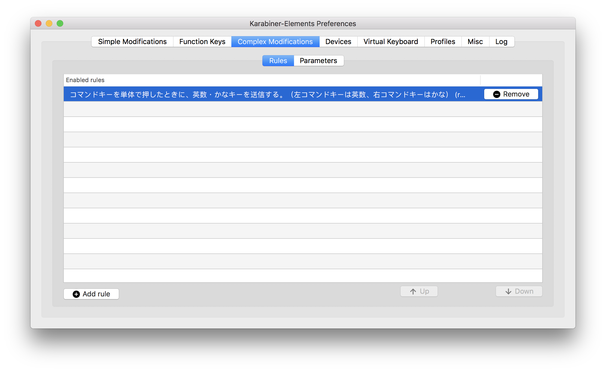
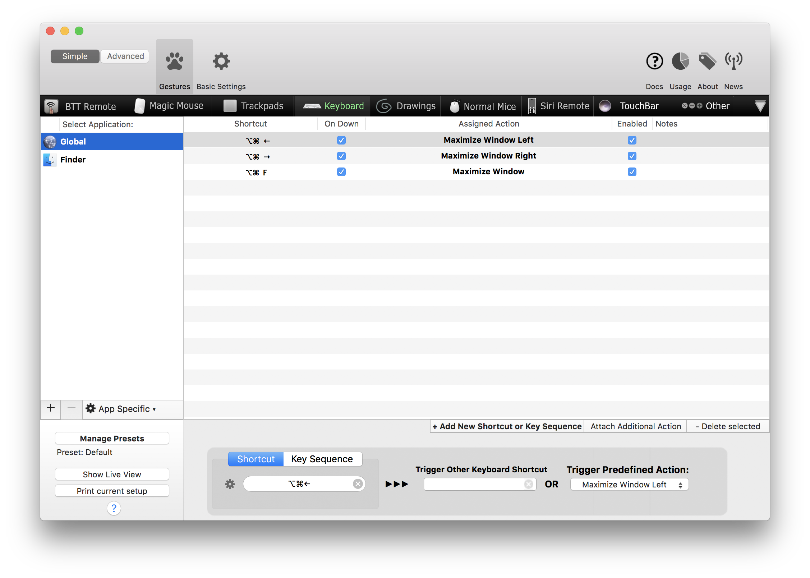
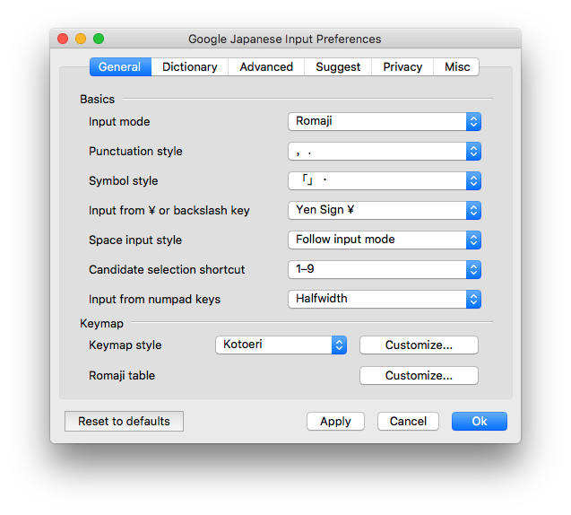
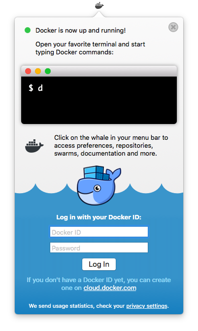
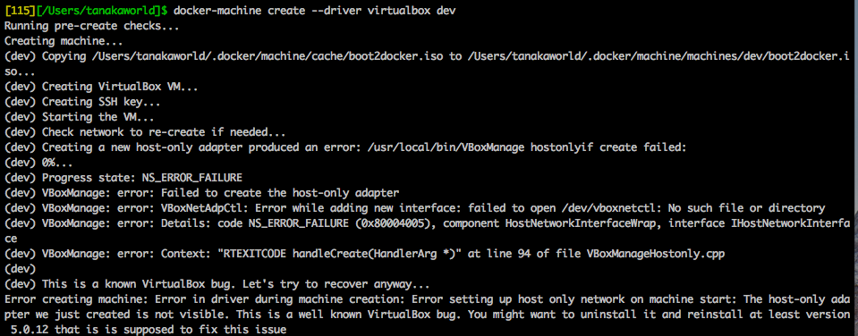
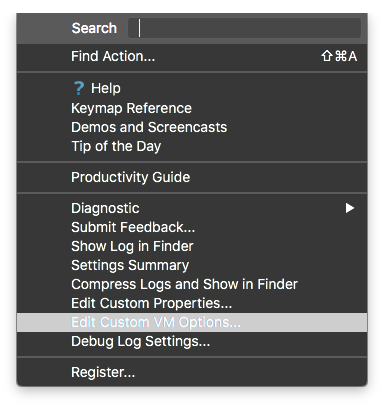

Clean install macOS High Sierra
Jul 11, 2018
General
- Settings > Keyboard > Text > Disable
Capitalize words automatically - Settings > Keyboard > Modifier Keys > Change
Caps LocktoControl - Settings > Trackpad > More Gestures >
Swipe between pages->Switch with three fingers - Settings > General > Enable
Use dark menu bar and Dock - TouchBar
- Settings > Keyboard > Customize Control Strip > Remove “Siri” button
- Finder
- Show hidden files by shortcut
Command + Shift + .
- Show hidden files by shortcut
Packages
Apps
- Karabiner Elements
Complex Modifications > Add rule > Import more rules from the Internet > Search byFor Japanese> Install > Enable following:
 - 1Password
Scan Barcode - CotEditor
- iTerm2
- Preferences > Terminal > Scrollback Lines >
Unlimited scrollback - Preferences > Keys > Left ⌥ Key > Esc+
- Preferences > Terminal > Scrollback Lines >
- BetterTouchTool
 - Chrome
- Google IME
Google Japanese Input > Preferences > General > Change Punctuation style “，．”
 - Slack for Mac
- Git
1
2
3
4$ brew install git
$ git config --global user.name "tanakaworld"
$ git config --global user.email "yutaro.tanaka.world@gmail.com"
$ git config --global core.editor emacs - Emacs
1
$ brew install
- vim
1
2
3$ brew install vim
$ touch ~/.vimrc
$ echo "syntax on" > ~/.vimrc - Docker 
1
2
3
4
5$ brew cask install docker
$ open ~/Applications/Docker.app
$ ln -s /Applications/Docker.app/Contents/Resources/etc/docker.bash-completion /usr/local/etc/bash_completion.d/docker
$ ln -s /Applications/Docker.app/Contents/Resources/etc/docker-machine.bash-completion /usr/local/etc/bash_completion.d/docker-machine
$ ln -s /Applications/Docker.app/Contents/Resources/etc/docker-compose.bash-completion /usr/local/etc/bash_completion.d/docker-compose
Create a docker machine1
2$ docker-machine create --driver virtualbox dev
=> Error
[Solved] Bump version of Virtual Box (v5.2.8 -> v5.2.12) and solved the error. - MySQL
create mysql container in Docker - Redis
create redis container in Docker1
2docker pull redis
docker run --name redis -d -p 6379:6379 redis redis-server --appendonly yes - nodebrew Update .bashrc
1
$ brew install nodebrew
Install node1
2
3
4
5export NODEBREW_ROOT=/usr/local/var/nodebrew
NODEBREW_HOME=/usr/local/var/nodebrew/current
export NODEBREW_HOME
export NODEBREW_ROOT=/usr/local/var/nodebrew
export PATH=$PATH:$NODEBREW_HOME/bin- v6.9.1
- v6.14.2
- v.8.9.1
- rbenv Update .bash_profile
1
2# this will also install ruby-build
$ brew install rbenvInstall ruby1
2eval "$(rbenv init -)"
export PATH=$HOME/.rbenv/shims:/usr/local/bin:/usr/bin:/bin:$PATH1
2$ rbenv install v.2.4.2
$ rbenv rehash - WebStorm
- Settings Repository > https://github.com/tanakaworld/WebStorm
- Increasing Memory Heap
1
2-Xms3072m
-Xmx3072m
- RubyMine
File > Settings Repository > https://github.com/tanakaworld/RubyMine
Increasing Memory Heap - SourceTree
- SequelPro
- Dropbox
- Sync Selected Folder
- Share screenshots using Dropbox
- Evernote
- Zeplin